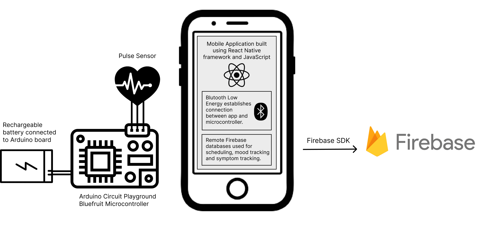
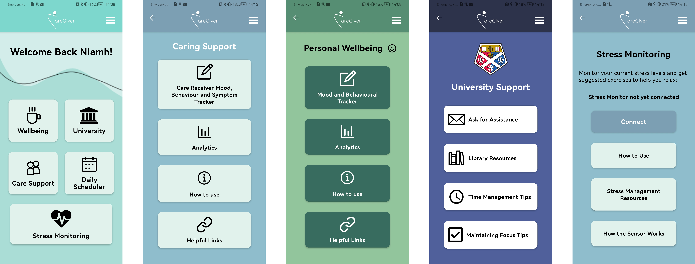
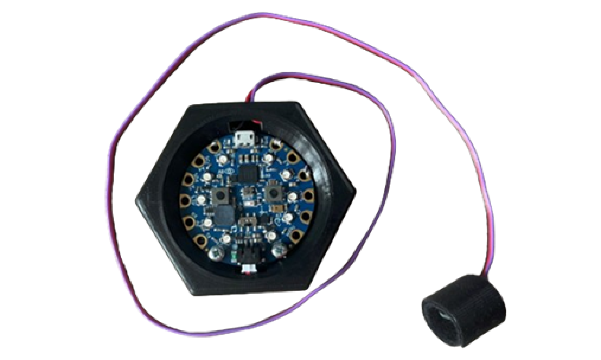
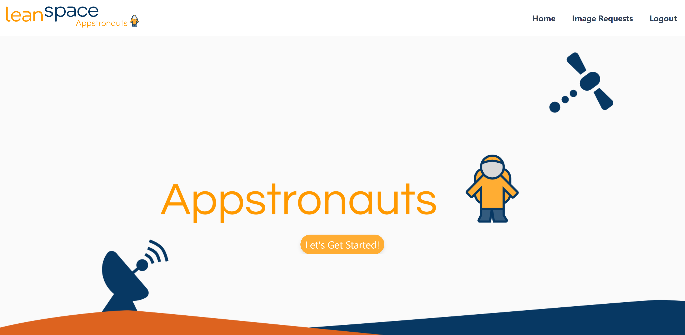
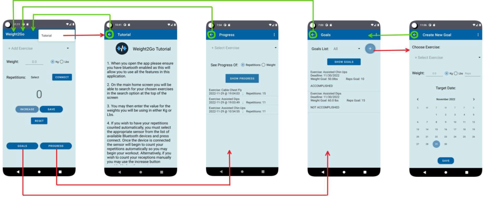
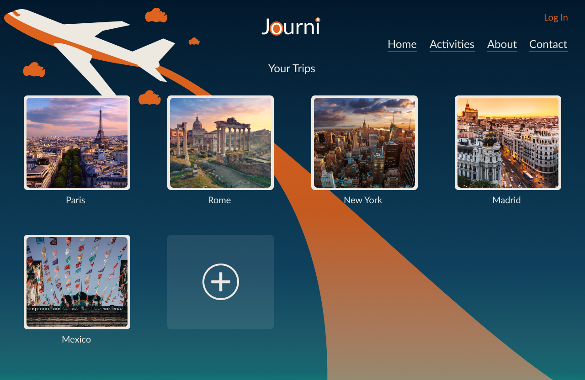
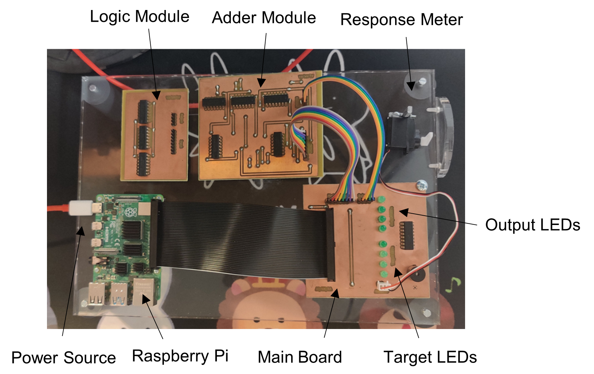
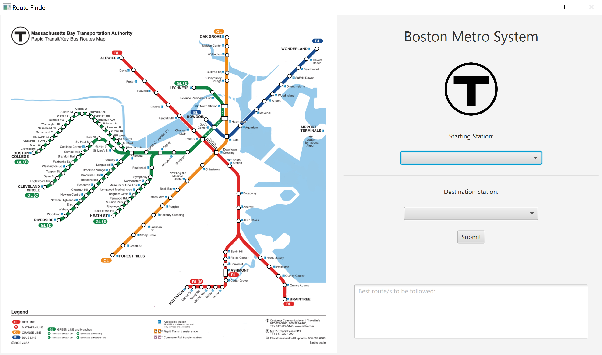

Having recently graduated from the University of Strathclyde with a First Class/Distinction in MEng Computer and Electronic Systems with International Study, I am now seeking a role where I can establish myself in the software design and development industry. My degree was awarded as a result of consistently achieving an A in every university module throughout my five-year course. Additionally, I spent an incredible year studying at Concordia University in Montreal during my exchange abroad, fulfilling the requirements of my International Studies.
Over the last few years, my growth in management skills have allowed me to coordinate and collaborate within a team in order to make sure everyone is heard. Being a very determined person, I am keen to take on any role within a team and do my part. My motivation and ambition make me a hardworking academic; A reflection of this is when I was added to the Dean’s list of students who have achieved a meritorious standard throughout all my years at university.
Opportunities that present challenges and room for error are the ones that draw me in the most, as there is much to be learnt. I aim to be hands-on and as interactive as possible, showing clients I am an effective communicator who does not shy away from solving complex problems. Ultimately, I'm looking for a role that allows me to make a positive impact whilst continuously exploring and developing my abilities.
CareGiver: A System to Support Student Carers Manage their Wellbeing
My final year individual project addresses the unmet wellbeing needs of student carers in higher education, a sizeable population facing many challenges alongside their caregiving responsibilities. This involved the creation of an integrated mobile application and a hardware interface. This project supports carers in handling daily challenges as well as assisting in managing the inherent stress associated with caregiving roles by utilising biofeedback sensors. These technologies collectively form the overall CareGiver system.
The project followed the Double Diamond framework and employed a user-centred design approach by first understanding the challenges, needs, and experiences of student carers through a literacy review, engagement with the student carer population, and market analysis. Based on the research findings, specific challenges and needs were defined, leading to the identification of key features for the proposed system and the creation of a requirements specification. Prototypes were then developed using low and high-fidelity design techniques, culminating in the development of a functional minimum viable product (MVP) that addressed the identified needs of student carers. The system's usability, effectiveness, and acceptability were evaluated through in-person testing to gather qualitative feedback and identify improvements. Comprehensive functional testing was conducted to verify that all essential features and functionalities of the CareGiver system operated as intended.

Features
The CareGiver system is designed to support student carers in managing their wellbeing alongside caregiving responsibilities and academic studies. It includes a personal wellbeing tracker for mood and behaviour logging, comprehensive task management for prioritising tasks and receiving reminders, and a versatile care receiver tracker for monitoring symptoms and sharing information with healthcare professionals. To further support academic success, the system offers quick communication with the university and easy access to academic resources and time management tips. Additionally, stress management features are integrated to help student carers effectively manage stress levels and improve their overall mental health. To measure the individual’s stress, a device was created to read users biofeedback and measure their stress by calculating the HRV of the individual. These stress levels are then sent to the mobile app using Bluetooth Low Energy (BLE). The CareGiver system provides real-time communication and seamless integration, aiming to provide timely support and resources to student carers.


UI/UX Skills
Results
The user feedback aligned with the project's aim by showcasing the successful application of user-centred design principles in creating a comprehensive and novel system that effectively addresses the challenges faced by student carers in higher education. The positive responses of the user evaluation highlighted the acceptability, usability, and potential effectiveness of the developed system, particularly in measuring and addressing unmet mental health needs among informal carers within the higher education sector. Despite the project's budget and time constraints constraints, the full collective of project objectives were accomplished to a high degree.
Satellite Operations System
I participated in the LeanSpace Hackathon at the annual Space Tech Expo held in Bremen (2023). Throughout this four-day event, I assumed the role of a UI/UX designer and front-end developer. My responsibilities included designing application pages and building and implementing them using React.
The primary goal of this application was to receive coordinate requests from clients and then search for available satellites passing over the target location within the next three hours. Additionally, the system checked for the availability of a ground station on the satellite's orbital path before reaching the target location to facilitate the uplink of the telecommand sequence.
I showcased this application to attendees of the Space Tech Expo, gathering valuable feedback from industry professionals. Subsequently, we implemented identified features to enhance the overall functionality.

Gym Tracker
Whilst on my year abroad in Canada, I led a collaborative team in developing a pioneering mobile application and hardware integration for tracking fitness progress in the gym. This multifaceted project involved processing real-time data from sensors, mastering Agile methodologies like Scrum, conducting stakeholder interviews, and translating feedback into a user-centered product. This effort culminated in winning the prestigious "Best Capstone Project Award" of 2022, underscoring not only technical accomplishments but also personal growth in teamwork, innovation, and problem-solving.

C++ "Risk" Game
The developed program built had to be compatible with the rules and map files and the command-line play of the “Warzone” version of Risk, an example of such rules can be found at: this website. A Warzone game setup consists of a connected graph map representing a world map, where each node is a territory and each edge represents adjacency between territories. Two or more players can play by placing armies on territories they own, from which they can attack adjacent territories to conquer them. The objective of the game is to conquer all territories on the map.
React Website "Journi" for Travellers
Journi is a vacation planning tool built using React that allows users to access, examine, and add to their trip all the details relating to activities they may wish to do there. We wanted to draw attention to the crucial details that participants needed to keep in mind for each activity, such as price, duration, location, specific requirements, etc. This would seek to address the significant stress, time management, and financial issues consumers have when making travel plans.

JSP Student Enrollment Site
Having set up an apache web server, a combination of tools such as PHP, JSP and SQL were used alongside different design patterns to implement a web application: The utilisation of Data Source Architectural Patterns facilitated the realisation of a comprehensive university student enrollment system, replete with administrative controls. This project showcased the prowess of thoughtful technological selection and strategic design pattern implementation in delivering a seamless and user-friendly web application tailored to the specific needs of managing student enrollments and administrative tasks within a university setting such as class enrollment, enrollment requirements, admin access to student records, class changes and so on.
Teaching Binary Game
An interactive modular game system was developed to teach Boolean logic, featuring various switchable modules for different game scenarios, including a logic gate board and a 3-bit adder board. This system, complemented by a mobile app for user responses, enables interaction with the microcontroller. The initial design was prototyped, tested, and then transferred to a Vero-board with soldered components. The app, linked via Bluetooth, accommodates different modules and future extensions. The creation of PCB schematics and routing, executed based on successful circuit tests, led to the fabrication of PCBs by in-house technicians. Following component soldering, the comprehensive system underwent extensive successful testing.

Boston Metro System GUI
I developed a program that utilised a multi-graph Abstract Data Type (ADT) to model the Boston Metro System, offering passengers directions between stations. The program included a graphical user interface (GUI) and followed a Model-View-Controller (MVC) architecture for organisation. This project highlighted my ability to implement complex data structures, design functional user interfaces, and adhere to established software architectures for practical applications.

In my role, I took on the task of developing a user-friendly graphical user interface (GUI) tailored for encoding and decoding algorithms, which formed a pivotal component for the integration of a cGAN neural network into a Human-Machine Interface (HMI) prototype. My rapid acquisition of GUI development skills using Python enabled a seamless integration into the HMI project, where I operated within an agile development framework as part of an iterative sprint team. This involved recurring reviews of tasks from the product backlog, fostering collaborative task prioritisation every three weeks.
Implementing DevOps practices and harnessing Git in an industry context, I championed robust quality control throughout the project's lifecycle. Conducting usability testing on the GUI was integral to my role, necessitating close collaboration with in-house engineers and stakeholders for feedback collection, bug identification, and enhancement suggestions.
My contributions extended beyond the GUI's construction. I expanded the Human Machine Interface application's functionality, incorporating new features seamlessly into the source code. Additionally, I embarked on comprehensive training and experimentation with cGAN networks, leveraging team datasets to create new Design of Experiments (DoE) and meticulously documenting all outcomes. In this pursuit, I deepened my knowledge of image processing techniques and gained insights into the capabilities and limitations of cGAN setup tools.
A notable aspect of my journey was fostering collaboration among team members and stakeholders across the organisation, facilitating effective communication channels and propelling progress towards shared objectives. Meticulous documentation was a constant priority, resulting in the creation of a comprehensive user guide for the interface and offering valuable recommendations for future improvements.
This experience offered me the privilege of engaging with various Rolls Royce employees, affording me invaluable insights into diverse company roles. The culmination of my contributions was underscored by Rolls Royce extending a full-time graduate job offer upon my degree's completion, serving as a testament to my impact within the organisation.